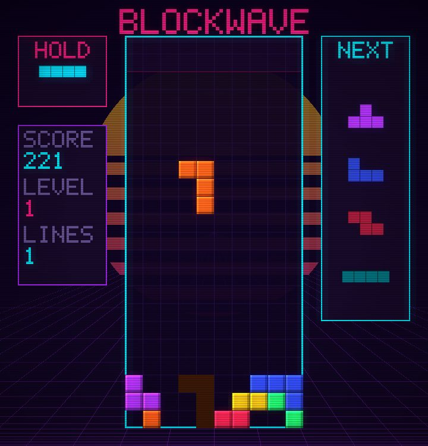

BLOCKWAVE · live, in your browser
An agent that never sees the score

Watch the pretrained agent play, see what the pixel agent sees, or play it yourself.
Downloads about 12.5 MB the first time: 8.1 MB of Python 3.13 and NumPy (Pyodide 0.29.5, from jsDelivr, cached by your browser afterwards), 4 MB of policy weights and 170 KB of the repo's Python. The pixel agent's 6.8 MB loads only if you open its tab.
The pixel agent sees only an 88×88 grey crop of the screen with the score panel blanked, four frames at a time. Its policy is a 1.7M-parameter conv net; its weights are another 6.8 MB.
The last four crops, oldest first: the stack its policy reads each decision.
- decisions
- 0
- pieces
- 0
- lines
- 0
- games done
- 0
Its policy right now
Lines per piece on held-out seeds, from the README
The four grey rows are the README's results table (complete games, seeds never used in training; 0.4 is the ceiling). They were not measured here. Each run is one seed, and a second seed of a pixel configuration scored 42% differently, so small gaps are not results. The purple row, once a game finishes, is the agent on this page.